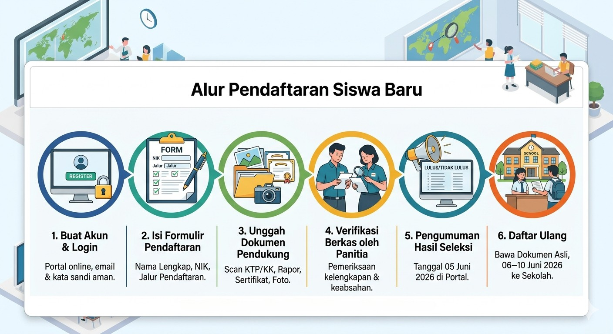

Alur Pendaftaran Siswa Baru
Berikut adalah langkah-langkah yang harus dilakukan oleh calon peserta didik untuk mengikuti seleksi penerimaan siswa baru:

- Buat Akun & Login — Daftarkan diri Anda melalui portal PPDB online SMKN 1 GEGER menggunakan email aktif dan buat kata sandi yang aman.
- Isi Formulir Pendaftaran — Lengkapi data diri secara lengkap dan benar pada halaman Isi Formulir, termasuk Nama Lengkap, NIK, dan pilih jalur pendaftaran yang sesuai.
- Unggah Dokumen Pendukung — Siapkan dan unggah dokumen yang diperlukan: scan KTP/Kartu Keluarga, rapor terakhir, sertifikat prestasi (jika mendaftar jalur Prestasi), dan foto terbaru.
- Verifikasi Berkas oleh Panitia — Panitia PPDB akan memeriksa kelengkapan dan keabsahan dokumen yang telah Anda unggah dalam kurun waktu yang ditetapkan.
- Pengumuman Hasil Seleksi — Hasil seleksi akan diumumkan melalui portal pada tanggal 05 Juni 2026. Periksa status pendaftaran Anda secara berkala.
- Daftar Ulang — Bagi calon peserta yang dinyatakan lolos, wajib melakukan daftar ulang secara langsung ke sekolah pada tanggal 06–10 Juni 2026 dengan membawa dokumen asli.